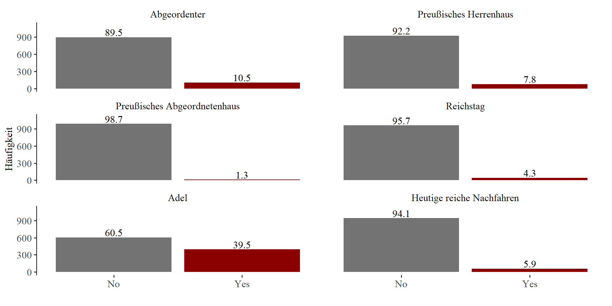
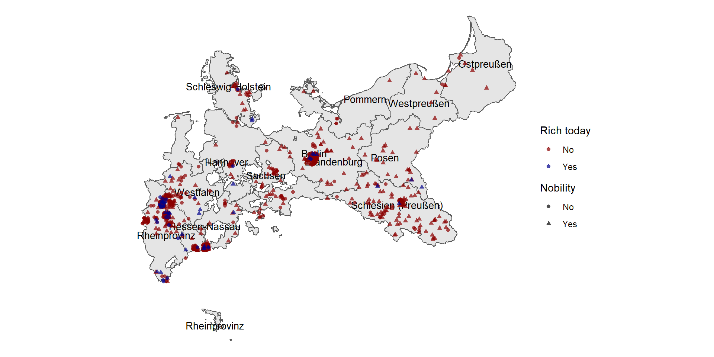
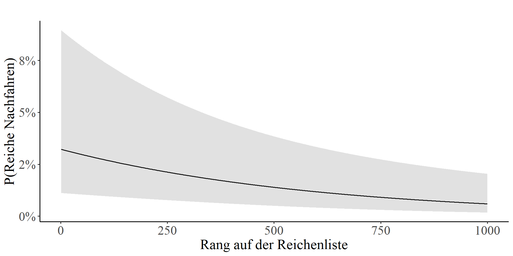

Reichtumserhalts im 20. Jahrhundert in Deutschland
Daria Tisch¹
14. November 2022
¹Max Planck Institute for the Study of Societies
Forschungsfrage und Motivation
Wie schaffen es Familien, ihre Position an der Spitze der Vermögensverteilung über mehr als ein Jahrhundert zu erhalten?
→ Sozialstrukturelle Mechanismen der Perpetuierung von großen Vermögen (Adel, Höhe des Reichtums, familiäre Verflechtungen der Elite)
So what?
- Familie als relevante ökonomische Einheit (Farrell 1993)
- Normativ: Leistung und nicht Geburt sollen Vermögensposition beeinflussen (Beckert 2018)
- Funktional: Ökonomische Ressourcen ineffizient verteilt und Gefahr des sozialen Zusammenhaltes (Beckert 2022; Toft and Hansen 2022)
Bisherige Forschung
- Intergenerationale Vermögensmobilität niedrig (Hansen 2014; Clark and Cummins 2015; Barone and Mocetti 2020; Pfeffer and Killewald 2018; Hällsten and Kolk 2020; Toft and Hansen 2022)
- Clark & Cummins (2015): Trotz institutionellen Veränderungen: Vermögensmobilität konstant in GB (1858-2012)
- Barone & Mocetti (2020): Persistenz in Vermögen, Einkommen und Elitenberufe
→ Forschungslücke: Mechanismen des Vermögenserhalts von Familien
Beitrag
- Elitenzirkulation: soziale Mobilität innerhalb der Vermögenselite
- Sozialstruktur & familiäre Verflechtung der Elite als Erklärung des Vermögenserhalts
- Verbindung Vermögenselite und politische Elite
Hypothesen: Politische & Vermögenselite
Hypothese 1: Je reicher ein Individuum desto größer die Wahrscheinlichkeit, ein politisches Amt inne zu haben.
Finanzielle Sicherheit essentiell für parlamentarische Karriere (Berghoff 1995)
Preußen begünstigt Interessen der Reichen überproportional (Berghoff 1995; Ullmann, Berghoff, and Rahden 2009)
Hypothese 2: Adelige Reiche haben größere Wahrscheinlichkeit ein politisches Amt inne zu haben als nicht adelige Reiche.
- Gesellschaftliche Leitfunktion des Adels im wilhelminischen Deutschland (Berghoff 1995; Augustine 2003)
- Preußischen Herrenhauses: Ernennung durch König oder Erbe des Sitzes
- Preußisches Abgeordnetenhauses: Dreiklassenwahlrecht
Hypothesen: Vermögenserhalt
Hypothese 3: Adelige Reichen haben eine geringere Wahrscheinlichkeit, ihr Vermögen über mehr als ein Jahrhundert zu erhalten als nicht adelige Reiche.
Adel im Kaiserreich gesellschaftliche Elite mit Sonderrechten und einer hohen sozialen Schließung zur Abgrenzung von der Wirtschaftselite und dem Bürgertum (Augustine 2003; Berghoff 2008)
Unternehmerische Tätigkeiten galten als nicht standesgemäß, Ablehnung des kapitalistischen Wirtschaftens (Augustine 2003; Berghoff 2008)
Hypothesen: Vermögenserhalt 2
Hypothese 4: Familiäre Zugehörigkeit zur politischen und Reichtumselite erhöht die Wahrscheinlichkeit des Reichtumserhaltes.
Strategische Allianzen zur Festigung der sozialen Position (Augustine 1994, Farrell 1993) (Augustine 1994)
“Imprinting effect” der Zugehörigkeit zum Kern der Machtelite (Politik und Vermögen)
Mechanismen sozialer Schließung: Rekrutierung in Wirtschaftselite über familiäre Netzwerke, Sozialisierung in Unternehmerfamilie und strategisches Heiraten (Augustine 2003)
Hypothese 5: Je reicher ein Individuum, desto größer die Wahrscheinlichkeit, das Vermögen zu perpetuieren.
- Winner-takes-all Charakter von Vermögensakkumulation und “accumulation of advantages” (Beckert 2022; Mills 2000)
Datengrundlage I
“Wer für den Fortschritt der Wissenschaft ist, der muß auch für die Aufklärung auf dem Gebiete des Vermögens und Einkommens sein. […] Wer sich bemüht, die tote Statistik des Vermögens und Einkommens zu beleben, und das tote Zahlengerippe mit Namen auszufüllen, der leistet der Wissenschaft einen Dienst.” (Martin 1912)

Jahrbuch des Vermögens und Einkommens der Millionäre (Martin 1912)
Datenbank der Reichstagsabgeordneten (1867 - 1938) 1
Liste der Mitglieder des Preußischen Herrenhauses 2
Liste der Mitglieder des preußischen Abgeordnetenhauses (Mann 1998)
Heutige Manager Magazin Listen (Bornefeld 2019)
→ Verknüpfung über GND und Wikidata ID, sowie händisch
Datengrundlage II


Daten und Methoden
- Daten
- N = 1000 Reichste auf Rudolf Martin Liste
- Angereichert mit Variablen wie heute noch reich, Politiker, Provinz
- Methoden
- Deskriptiv: Netzwerkanalyse, Häufigkeitsauswertungen
- Schließend: Logistische Regression
Deskriptive Beschreibung der Daten

Geographischer Überblick:
Reiche pro Einwohner
Geographischer Überblick:
Reiche Nachfahren und Adel

Familiennetzwerke: Politik und Reichtum Anfang 20. Jahrhundert
Wahrscheinlichkeit, Politiker zu sein
| M1 | M2 | |
|---|---|---|
| Predictors | OR | OR |
| Intercept | 0.08 *** | 0.08 *** |
| Rang | 1.00 *** | 1.00 *** |
| Adel | 5.44 *** | 4.21 *** |
| Observations | 1000 | 1000 |
| R2 Tjur | 0.086 | 0.130 |
| * p<0.05 ** p<0.01 *** p<0.001 | ||
→ Für adelige Reiche ist die Chance, Politiker zu sein 5-mal so hoch wie für nicht-adelige Reiche [H2 ✓].
Wahrscheinlichkeit, Politiker zu sein nach Vermögenshöhe
→ Je reicher, desto größer ist die Wahrscheinlichkeit [H1 ✓]
Vermögenserhalt über ein Jahrhundert
| M1 | M2 | M3 | |
|---|---|---|---|
| Predictors | OR | OR | OR |
| Größtes Netzwerk | 3.53 * | ||
| Rang | 1.00 *** | 1.00 ** | 1.00 ** |
| Adel | 1.19 | 1.15 | 1.11 |
| Direktes Familienmitglied auch reich |
2.56 * | 1.99 | |
| Politiker | 2.86 ** | ||
| Familie Politiker | 2.59 ** | ||
| Observations | 1000 | 1000 | 1000 |
| R2 Tjur | 0.091 | 0.097 | 0.096 |
| * p<0.05 ** p<0.01 *** p<0.001 | |||
Wahrscheinlichkeit reicher Nachfahren nach Vermögenshöhe

→ Je reicher, desto größer ist die Wahrscheinlichkeit [H5 ✓]
Zusammenfassung
- 6% der 1000 reichsten Preußen (1912) haben superreiche Nachfahren
- Persistenz des Reichtums ganz an der Spitze eher gering?
- Familiäres Netzwerk als Erklärungsfaktor für Reichtumsperpetuation im 20. Jahrhundert (Wagner, Boertien, and Gørtz 2020; Toft and Hansen 2022)
- “Imprinting effect” von familiären Verflechtungen in der politischen und Reichtumselite?
- Ausblick: Ausweitung auf andere deutsche Gebiete Anfang des 20. Jahrhunderts? Bayern, Württemberg etc.
Kontakt: tisch@mpifg.de
dariatisch.github.io